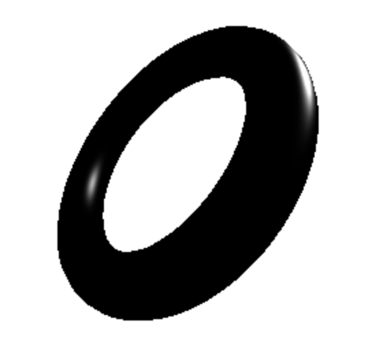
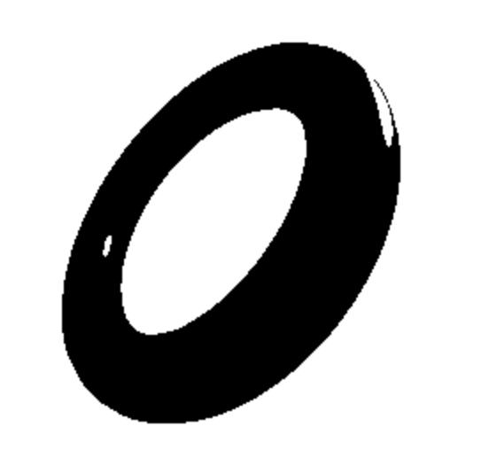
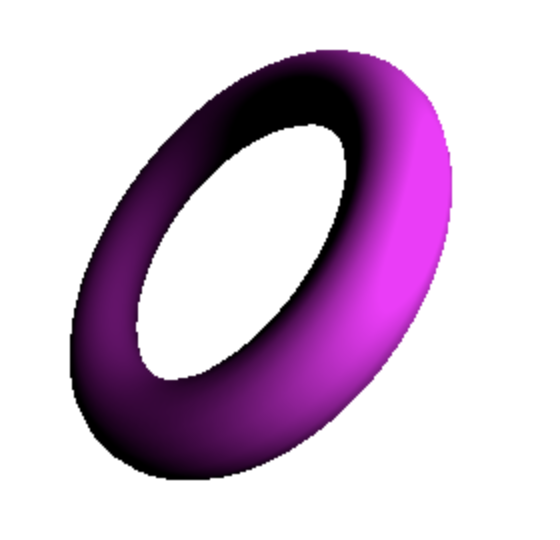

Our project is a non-photorealistic watercolor shader, written for WebGL using the Three.js API.
Starting from an adapted version of the Blinn-Phong shader from project 4, we based most of our work off of
a paper by Luft and Deussen,
which defined a real-time watercolor shader by applying several intensity images in layers to the alpha and
color channels of each consecutive output. Because watercolor is an inherently transparent medium, as
shown in the below graphic of real watercolor pigment transparencies, our shader modulates the alpha channel
to add transparency to our geometry and mask out the specular regions like realistic watercolor paintings.
To make our shader more convincing, we used several of Luft and Deussen's
layer formulas to add effects such as edge darkening, pigment granulation, and edge modulation, which
mimic the realistic effects of watercolor pigment spreading and the underlying paper textures.
To support more complex scenes, we added in segmentation, which would ID each object in a scene and allow
us to apply different watercolor shaders to each object.
Technical Approach
For our approach to watercolor shaders, we followed the pipeline described by Luft and Deussen and implemented using Three.js
and WebGL. The pipeline breaks down the watercolor effects into several major steps. It begins with segmentation of the image
into individual objects with unique IDs and base colors. Each of these segments are rendered with Blinn-Phong lighting effects
that will be later applied in layers. Next is a simplification step to remove details from the source image that would not be as
prominent in a watercolor painting such as sharp edges or harsh color transitions. Finally, the watercolor effects,
including edge darkening, pigment granulations, and edge modulation, are applied.
To segment the scene, we first traverse the scene for each individual mesh. We assign each mesh a ID, and generate a random base color
material to represent that object in the render. We store each of these IDs and colors in a map. After assigning all objects an ID,
we iterate through each object and generate the base intensity image mask by selecting pixels in the image space that match an object's
color. From this mask, we are able to render the object on its own through the full pipeline according to user-defined parameters.
The renders for each object are composited together at the end of pipeline. Through segmentation, we are able to load any file with any
number of objects and in any standard format, such as the fruit model shown in Segmentation Demo.
Segmentation
When we initially started our watercolor pipeline, we implemented each step as a post-processed effect on a rendered image from the previous
passes. However, since lighting effects need to be applied to a 3D mesh rather than a texture, we needed to render three images
containing various compnents of the lighting element: the intensity, specular, and diffuse images. The intensity image contains
just the shape of the object in image space and is the result of the segmentation process, while the specular and diffuse images
contain those respective terms from the Blinn-Phong model. A step function is applied to the specular image which is then subtracted
from the intensity image using a shader. This creates the solid white highlights typical of watercolor paintings. Next, the diffuse image is
applied in another shader. The data in the diffuse image is stored in the color channels, so we converted it to grayscale.
Then, we use this value to linearly interpolate between a dark color and a light color passed in by the user.

Specular Image

Intensity Image with Specular Removed

Diffuse Image
Intensity Image with Diffuse and Specular
One issue we noticed with our initial color linear interpolation is that colors would mix according to the additive color model,
because the colors passed into the shader are represented in RGBA. To fix this and correctly draw colors to the screen according
to the subtractive color model and real pigment mixing, we converted the RGB colors of each input color to CMYK before linearly
interpolating, and then re-converted the colors back to RGB before outputting the fragment.
Next, we simplify the image using a Gaussian blur. The Gaussian filter kernel is a 2D convolution kernel.
However, since the 2D Gaussian is separable into it's x and y components, we optimize this step by
applying a 1D Gaussian convolution in each direction using shaders. This blur pass is used to remove details in the image.
After this blur pass, we applied a step function to extract a hard-edged shape from the blurred images.
Gaussian Kernel
The first watercolor effect we applied was edge darkening. This is an effect caused by pigments moving towards the edge of a patch
of wet paper so that the edges of painted shapes have a darker color than the center. We implemented this effect by inverting
the Gaussian blur effect from the simplication step to cause a smooth transition from the borders to the center.
Edge Darkening
For paper texture effects, we sampled from the texture map of the paper to retrieve its RGB color at a certain fragment
and multiplied it with the input color. This gives the effect of a flat even wash of paint. To add pigment granulation,
we converted the RGB color of the paper texture into greyscale, and passed its sampled point into the alpha channel.
To account for the fact that a white fragment would have a high alpha value, when in reality dark fragments (or the dips
in the paper) should have more pigment and therefore a high alpha value, we inverted the alpha value before
returning the final RGBA value of the fragment shader.
Pigment Granulation
Edge Modulation
Problems encountered included the aforementioned RGB vs CMYK color models that needed to be converted between to accurately
mimic the color mixes that occur with real watercolors, as well as the greyscale conversion of the alpha layers needing to be
inverted to properly assign the dips in the paper with more opaque pigments. We also ran into multiple issues properly inputting
passes in the correct order for EffectComposer to output intended results. To handle issues with the passes, we broke up the output
and rendered individual passes consecutively to isolate shader codes that may be causing issues. Correctly using render targets and
buffers, as well as copy passes, generally handled these issues. We also ran into an issue where our intial pipeline code
ate up continuously higher amounts of GPU memory; the fix was moving out some of the render target objects outside of the
animation loop.
Lessons learned were primarily that it not easy to translate the formulas and processes used in a paper into functional code,
depite understanding the paper fairly well. We had to take multiple liberties in our representations of certain effects like
pigment granulation to accommodate the textures we used and successfully pass it into the pipeline. This project was a fun
way to apply concepts we learned in class into a beautiful artistic as well as mathematic non-photorealistic render. Using WebGL and
Three.js was also a practice in experimentation: there is surprisingly little documentation for many of Three.js's functions we needed
to use to correctly handle post-processing, so we had to spend decent amounts of time reverse-engineering Three.js shader code from the
API website as well as snippets on help forums to understand how to use tools like EffectComposer and texture maps.